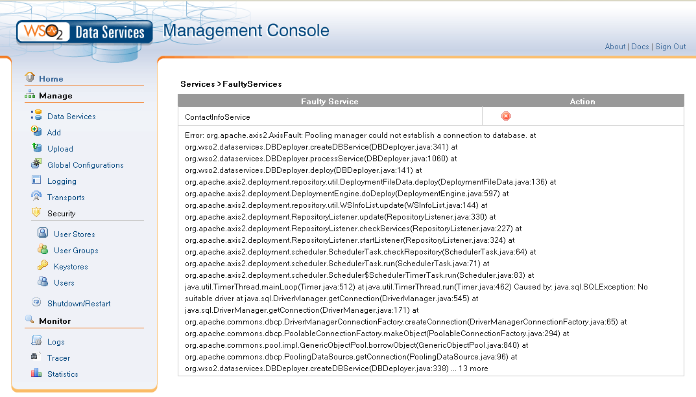

If a faulty service is deployed, it will be displayed on the Available Services page as [n] faulty service(s):
Clicking on the faulty service link will open the page as shown below, on which the details of the faulty services will be listed. By using the 'Delete Faulty Service' icon on this page, you will be able to delete the deployed faulty service.

Figure: Deleting Faulty Services